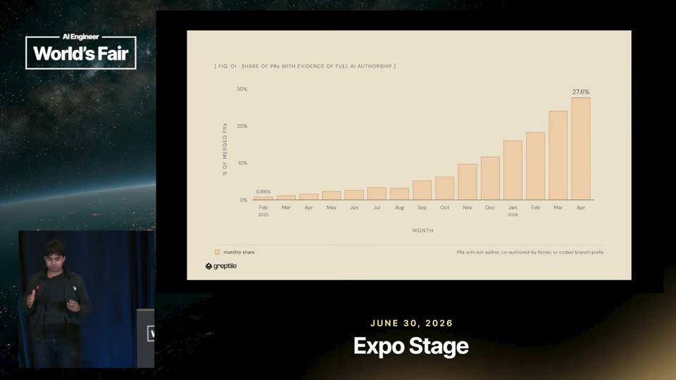
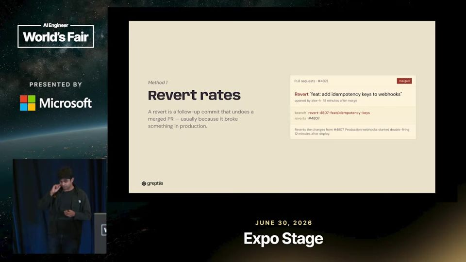
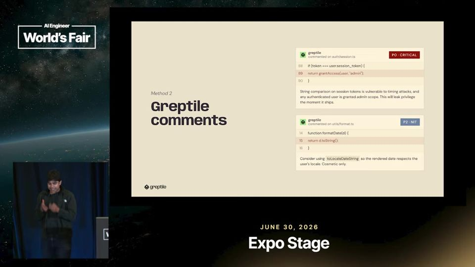
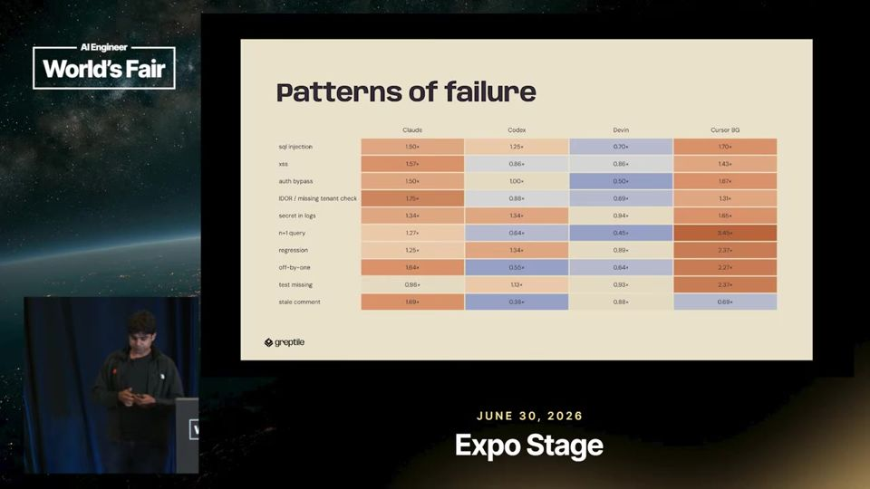
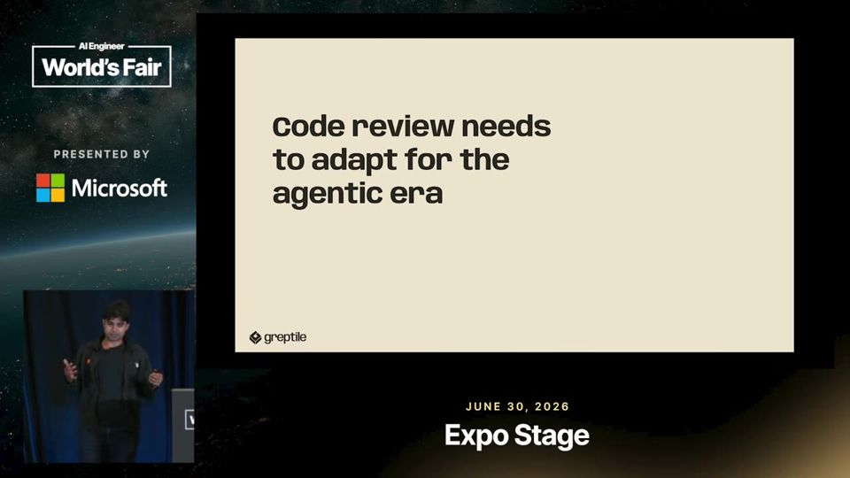
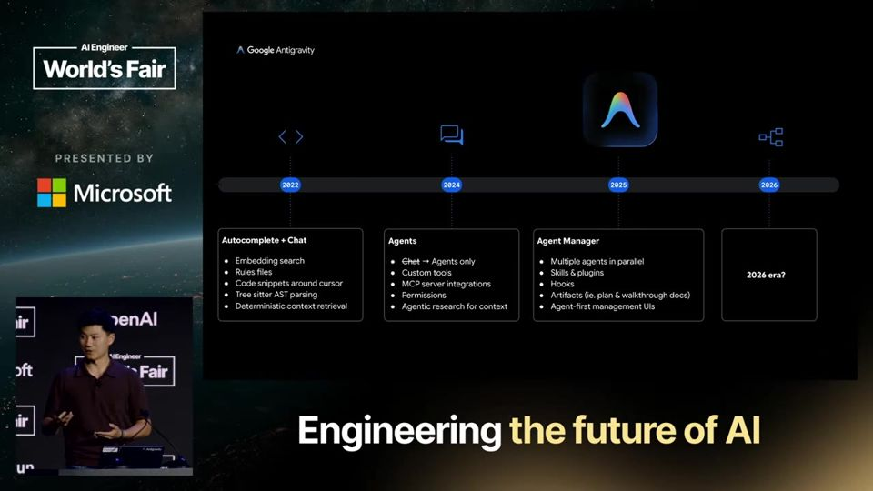
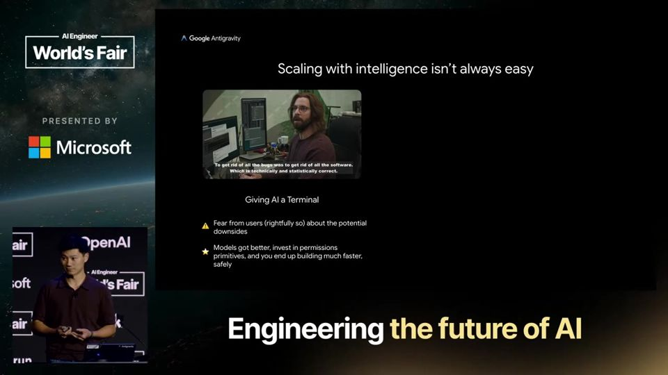
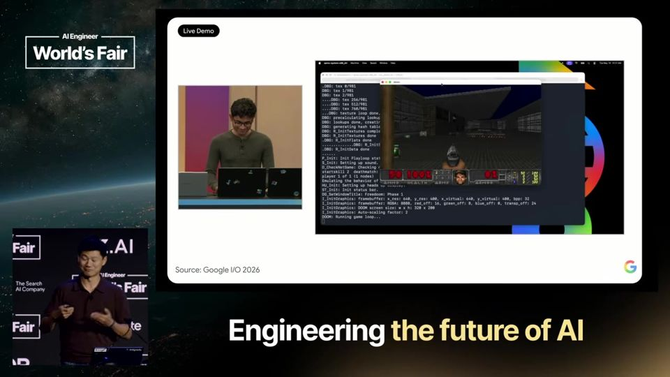
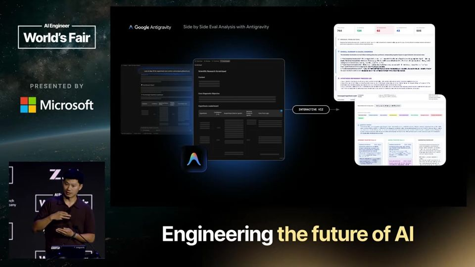
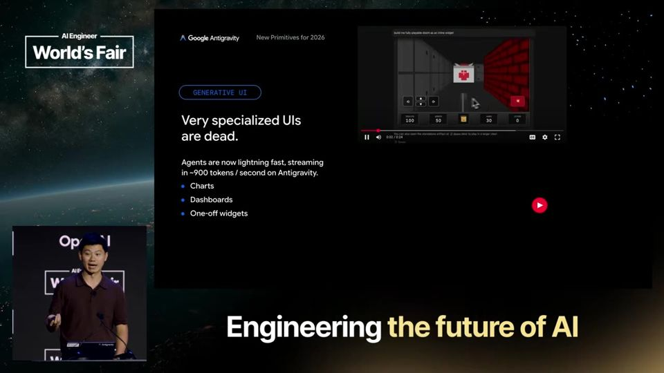

Estudo diário · canal AI Engineer · domingo, 27 set 2026
Aprendendo AI
um talk por bloco, explicado como numa aula particular
Edição · domingo, 27 set 2026 · 2 vídeos
Quando o agente escreve o código
Os dois talks olham para o mesmo momento: agentes de IA já escrevem boa parte do código em empresas reais. A Greptile mostra, com dados de um milhão de pull requests por mês, que esse código erra tanto quanto o humano, mas de jeitos diferentes. O Google Antigravity mostra o outro lado, como montar produtos que deixam times de agentes trabalharem sozinhos. Comece pelos dados e termine pela visão de produto.
01
AI-Generated Code Is Already Competing With Human Code
PRs escritos por agentes de IA já ficam na mesma faixa de qualidade dos humanos; o que muda é o tipo de erro e a forma de validar.
A Greptile analisou mais de um milhão de pull requests por mês e estima que cerca de um quarto tem sinais de autoria quase total de IA, contra menos de 1% um ano antes.
Em reversões, severidade dos problemas (P0, P1, P2) e rodadas de revisão, o código de agentes ficou na mesma faixa do humano, mas cada agente erra de um jeito, como mais SQL injection no Claude e mais N+1 queries no Cursor.
Com quem escreve centenas de PRs por mês, revisão manual não escala, e a empresa propõe validar com três perguntas sobre contrato com o usuário e intenção do autor, usando agentes que rodam o código em sandbox.
Como detectar código feito por agente
Marcar PR como feito por IA é difícil. O campo de autor do GitHub acusou menos de 1%, número que o palestrante achou baixo demais. Ele somou dois outros sinais, o rodapé de coautoria na descrição (co-authored by Claude ou Cursor) e o prefixo do nome da branch, como o Codex usa. Com isso chegou a cerca de 25% dos PRs do mês (min 3:48 a 4:19). É uma estimativa por indícios, sem certeza de autoria.

A adoção de agentes cresce de forma contínua, sem salto visível na data de cada modelo novo.▶ 04:49
Taxa de reversão parecida entre humanos e agentes
O primeiro teste de qualidade foi a taxa de revert (PR desfeito depois de mergeado). O Codex teve cerca de 1 revert a cada 1.000 PRs, o Devin 3,5 e os humanos 2,5 (min 5:52). Para checar se os agentes só pegavam tarefas fáceis, ele cruzou com o tamanho do PR e achou pouca correlação (min 6:23). O talk conclui que falta evidência forte de que o humano seja melhor.

Humanos ficam no meio entre Codex e Devin em reversões por mil PRs.▶ 05:52
Severidade e rodadas de revisão sem grande diferença
O segundo teste contou os problemas que o próprio Greptile aponta, classificados em P0, P1 e P2 (do mais grave ao menos grave). Três dos quatro agentes testados geraram menos P0 que humanos (min 6:53). O terceiro teste contou rodadas de revisão até o merge, com Devin em 2,1 e Codex em 2,45 (min 7:56), e os humanos ficaram no meio dessa faixa.

Em três dos quatro agentes, a taxa de P0 ficou abaixo da humana.▶ 06:53
Cada agente falha de um jeito
Ao buscar termos nos comentários do Greptile, o palestrante montou um gráfico de padrões de falha com 1x igual à taxa humana. O Claude aparece com 1,5x mais SQL injection que humanos e o Devin com metade dos problemas de bypass de autenticação (min 9:16 a 9:29). A descrição do vídeo cita ainda mais N+1 queries no Cursor. Escolher o agente passa a incluir escolher quais erros você aceita revisar.

Os agentes divergem entre si e dos humanos em tipos específicos de bug.▶ 08:58
Validação em escala e as três perguntas
O usuário mediano do Greptile abre 50 PRs por mês, o percentil 90 abre 500 e o percentil 99 chega aos milhares (min 10:01 a 10:32). Nesse ritmo, revisão manual e QA humano não acompanham. A proposta é validar com três perguntas. A mudança viola o contrato com o usuário? Aumenta a chance de violação futura? Cumpre a intenção do autor? (min 11:02).

Todo o critério de validação da empresa cabe em três perguntas.▶ 11:02
N+1 query (consulta repetida ao banco em laço). Uma N+1 query é como um garçom que anota a mesa inteira, mas vai à cozinha buscar um prato por vez, fazendo dez viagens quando uma bandeja resolveria.
Um programa guarda dados num banco de dados (database) e busca esses dados fazendo perguntas chamadas consultas (queries). Cada consulta é uma ida e volta que custa tempo.
O problema aparece quando o código faz 1 consulta para pegar uma lista e depois faz mais 1 consulta para cada item dessa lista. Com N itens, o total vira N+1 consultas.
Exemplo: mostrar 100 pedidos e buscar o cliente de cada pedido um por um gera 101 consultas, quando 2 bastariam.
Com poucos dados de teste o atraso passa despercebido. Em produção, com milhares de linhas, a página fica lenta e o banco fica sobrecarregado.
A correção junta as buscas num lote só, com um JOIN (junção de tabelas) ou com carregamento antecipado (eager loading) do ORM. O talk usou esse termo para medir padrões de erro por agente.
BUSCA A LISTA1 consulta traz N itens
→
LAÇO NOS ITENS1 consulta nova para cada item
→
N+1 IDAS AO BANCOPágina lenta e banco sobrecarregado
Ajuda saber antes: Banco de dados, Consulta SQL, Laço de repetição (loop), ORM
Termos do talkPull request (pedido de integração de código)Agente de código autônomo (IA que recebe uma tarefa e abre o PR sozinha)Revert (reversão de um PR já mergeado)Severidade P0/P1/P2 (níveis de gravidade de um bug)Rodada de revisão (ciclo de comentar, corrigir e reenviar o PR)SQL injection (injeção de comandos SQL por entrada maliciosa)Sandbox (ambiente isolado para rodar o código)
leitura crítica
O talk é pitch da Greptile, que vende revisão por IA e mede qualidade usando os próprios comentários. Isso é circular, pois o revisor define o que conta como bug. A detecção de PRs de IA depende de rodapés e nomes de branch, e a taxa de revert fica em poucas unidades por mil, sem intervalo de confiança nem controle de tarefa. Não há dados de PRs que o cliente nunca abriu. Os clientes citados são grandes, mas o recorte é de quem já usa a ferramenta.
O que fazer com isso
Se seu time usa agentes de código, marque PRs com rodapé de coautoria ou prefixo de branch para poder medir revert e retrabalho por origem.
Ajuste a revisão ao agente usado. Peça atenção extra a SQL injection em código do Claude e a N+1 queries em código do Cursor, conforme os padrões citados.
Antes de aceitar 'PR de IA é tão bom quanto o humano', compare com a sua própria taxa de revert e de rodadas de revisão, em vez de confiar no número de outra empresa.
Ao definir sua checagem de merge, escreva as três perguntas (contrato, risco futuro, intenção) e use-as como checklist de revisão.
02
Get Out of the Model's Way
Projete o produto em torno de primitivas que crescem com o modelo, e deixe o modelo fazer o trabalho pesado.
Kevin Hou, do Google Antigravity, defende que um produto de IA deve melhorar sempre que o modelo melhora, e que isso exige sair do caminho do modelo.
O Antigravity 2.0 separa o gerenciador de agentes da IDE e aposta em três primitivas para 2026: subagentes dinâmicos, sidecars e interface gerada na hora.
Como prova, ele mostra um kernel de sistema operacional feito por 93 subagentes em 12 horas por menos de US$ 1.000 e uma análise de evals em que 100 agentes testam hipóteses em paralelo.
Escalar com a inteligência do modelo
Hou diz que a lição mais forte de quatro anos criando ferramentas para devs é que o produto precisa melhorar quando o modelo melhora. Em 2022 tudo era determinístico (embeddings, regras, árvores de sintaxe). Em 2024 vieram agentes com MCP e permissões. Em 2025, o gerenciador de agentes com skills e hooks.

Cada era do produto nasce de uma capacidade nova do modelo▶ 03:38
Batalhas antigas mostram o padrão
Dar um terminal à IA assustava, mas com modelos melhores e sistemas de permissão os usuários entregaram mais e com segurança. Tirar o chat lateral do Windsurf gerou reclamação, e depois a pesquisa e a execução agênticas viraram o padrão. Hou usa os dois casos para justificar apostas impopulares no início.

Remover algo querido pelos usuários custou reclamação antes de virar padrão▶ 05:09
Times de agentes com subagentes dinâmicos
Com o comando /teamwork, um agente líder monta um time de tamanho livre com papéis especializados, como front-end, back-end, QA e design. Cada subagente é gerado na hora e pode usar um modelo diferente do líder. A demonstração mais forte foi um kernel de sistema operacional que roda Doom.

O custo declarado da corrida que construiu um kernel completo▶ 10:45
Automatizar a análise de evals com hipóteses em paralelo
Comparar um experimento com o controle dava trabalho manual em notebooks Jupyter. Agora o pesquisador pergunta em linguagem natural, o agente calcula a diferença, propõe 100 hipóteses e dispara um subagente por hipótese. O resultado volta como relatório e como interface interativa com filtros. Segundo Hou, 90% do fluxo foi automatizado.

O fluxo de análise de evals que passou a levar minutos▶ 12:56
Sidecars e interface gerada como primitivas
Sidecar é um processo de vida longa que escuta o mundo externo (SMS, webhooks, cron, pull requests) e permite ao modelo criar seus próprios gatilhos. A interface gerada troca telas fixas por gráficos, tabelas e até jogos desenhados sob demanda. Hou compara com o teclado físico que o iPhone dispensou.

A interface aparece dentro do chat, sem template pronto▶ 16:35
Sidecar (processo auxiliar que escuta eventos externos). Um sidecar é como o porteiro de um prédio, que passa o dia na portaria atento a entregas e visitas e avisa o morador assim que algo chega.
Um agente de IA costuma agir só quando alguém manda uma mensagem para ele.
O sidecar (processo auxiliar) é um programa que fica ligado o tempo todo ao lado do agente, apenas escutando.
Ele observa o mundo externo, como mensagens SMS, webhooks (avisos automáticos enviados por outros sistemas), horários agendados (cron) e pull requests no GitHub.
O próprio modelo configura gatilhos nesse sidecar, por exemplo pedir para revisar o código sempre que chegar um pull request novo.
No Antigravity, as tarefas agendadas já rodam sobre sidecars, e o Google promete publicar a especificação desse protocolo de plug-in para outros desenvolvedores.
EVENTO EXTERNOSMS, webhook, horário ou pull request
→
SIDECAR ESCUTAProcesso sempre ligado ao lado do agente
→
GATILHO DISPARARegra criada pelo próprio modelo
→
AGENTE AGE SOZINHOTrabalha sem esperar pedido humano
Ajuda saber antes: Agente de IA, Webhook, Cron job, Gatilho de evento
analogia
Rollout (execução de um modelo sobre uma tarefa de avaliação). Um rollout é como uma rodada de prova em que o aluno resolve a lista inteira de exercícios e entrega a folha para correção.
Para saber se um modelo de IA melhorou, a equipe entrega a ele uma lista fixa de tarefas de teste.
Cada vez que o modelo tenta resolver essas tarefas do começo ao fim, temos um rollout (execução completa sobre a tarefa).
Os pesquisadores rodam vários rollouts da versão atual (controle) e da versão nova (experimento) e guardam os resultados em duas tabelas.
Na eval side-by-side (avaliação lado a lado), eles comparam as tabelas para achar a diferença de desempenho e o motivo dela.
No exemplo do talk, o agente calcula essa diferença, propõe 100 hipóteses e cria um subagente para investigar cada uma em paralelo.
TAREFAS DE TESTELista fixa usada para avaliar o modelo
→
ROLLOUTSModelo executa cada tarefa até o fim
→
TABELAS COMPARADASControle contra experimento
→
DIFERENÇA EXPLICADAOnde a versão nova ganhou ou perdeu
Ajuda saber antes: Eval (avaliação de modelo), Grupo de controle, Subagente
Termos do talkSubagente (agente auxiliar criado por outro agente)Agent teams (times de agentes)Generative UI (interface gerada pelo modelo sob demanda)Scaling with intelligence (produto que melhora junto com o modelo)Agent manager (painel para gerenciar vários agentes)MCP (protocolo para conectar ferramentas a agentes)
leitura crítica
O talk é um pitch do Antigravity 2.0, feito por quem lidera a engenharia do produto e trabalha dentro do Google DeepMind, o que cria conflito de interesse. Os números do kernel e dos 90% de automação vêm de demos internas, sem medição independente, sem descrição da qualidade do resultado nem comparação com outras ferramentas. A frase sobre interfaces escritas por humanos estarem mortas é uma aposta sem dados que a sustentem. A especificação do sidecar ainda não saiu.
O que fazer com isso
Liste as primitivas do seu produto ou fluxo de trabalho com IA e pergunte quais delas melhoram sozinhas quando o modelo é trocado por um melhor.
Teste um fluxo em que um agente líder divida uma tarefa grande entre subagentes e compare custo e qualidade com o mesmo trabalho feito por um agente só.
Automatize uma análise repetitiva de dados pedindo ao agente para propor hipóteses e investigá-las em paralelo, revisando o relatório final antes de agir.
Ao adotar agentes em ferramentas com terminal, configure permissões antes de liberar acesso amplo, como o talk descreve.
Edições anteriores
Ainda não há edições anteriores.
Glossário
tudo que você já estudou
N+1 query
consulta repetida ao banco em laço. Uma N+1 query é como um garçom que anota a mesa inteira, mas vai à cozinha buscar um prato por vez, fazendo dez viagens quando uma bandeja resolveria.
Um programa guarda dados num banco de dados (database) e busca esses dados fazendo perguntas chamadas consultas (queries). Cada consulta é uma ida e volta que custa tempo.
O problema aparece quando o código faz 1 consulta para pegar uma lista e depois faz mais 1 consulta para cada item dessa lista. Com N itens, o total vira N+1 consultas.
Exemplo: mostrar 100 pedidos e buscar o cliente de cada pedido um por um gera 101 consultas, quando 2 bastariam.
Com poucos dados de teste o atraso passa despercebido. Em produção, com milhares de linhas, a página fica lenta e o banco fica sobrecarregado.
A correção junta as buscas num lote só, com um JOIN (junção de tabelas) ou com carregamento antecipado (eager loading) do ORM. O talk usou esse termo para medir padrões de erro por agente.
execução de um modelo sobre uma tarefa de avaliação. Um rollout é como uma rodada de prova em que o aluno resolve a lista inteira de exercícios e entrega a folha para correção.
Para saber se um modelo de IA melhorou, a equipe entrega a ele uma lista fixa de tarefas de teste.
Cada vez que o modelo tenta resolver essas tarefas do começo ao fim, temos um rollout (execução completa sobre a tarefa).
Os pesquisadores rodam vários rollouts da versão atual (controle) e da versão nova (experimento) e guardam os resultados em duas tabelas.
Na eval side-by-side (avaliação lado a lado), eles comparam as tabelas para achar a diferença de desempenho e o motivo dela.
No exemplo do talk, o agente calcula essa diferença, propõe 100 hipóteses e cria um subagente para investigar cada uma em paralelo.
processo auxiliar que escuta eventos externos. Um sidecar é como o porteiro de um prédio, que passa o dia na portaria atento a entregas e visitas e avisa o morador assim que algo chega.
Um agente de IA costuma agir só quando alguém manda uma mensagem para ele.
O sidecar (processo auxiliar) é um programa que fica ligado o tempo todo ao lado do agente, apenas escutando.
Ele observa o mundo externo, como mensagens SMS, webhooks (avisos automáticos enviados por outros sistemas), horários agendados (cron) e pull requests no GitHub.
O próprio modelo configura gatilhos nesse sidecar, por exemplo pedir para revisar o código sempre que chegar um pull request novo.
No Antigravity, as tarefas agendadas já rodam sobre sidecars, e o Google promete publicar a especificação desse protocolo de plug-in para outros desenvolvedores.